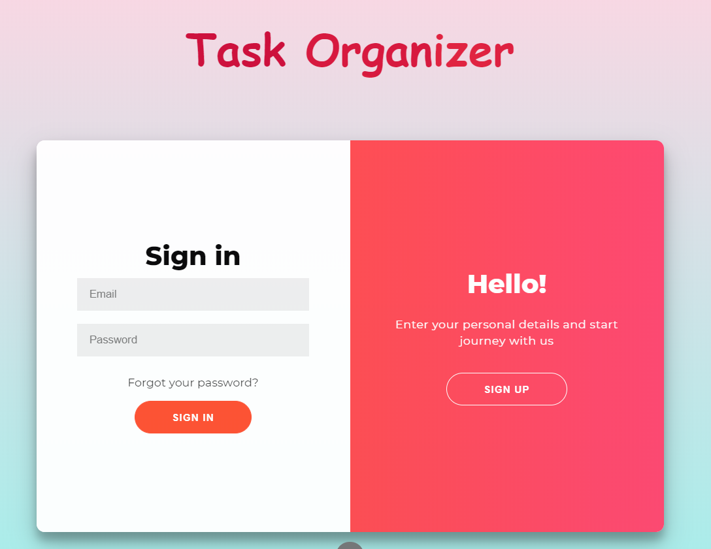
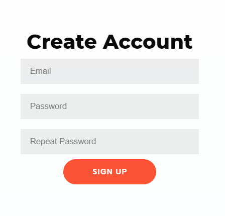
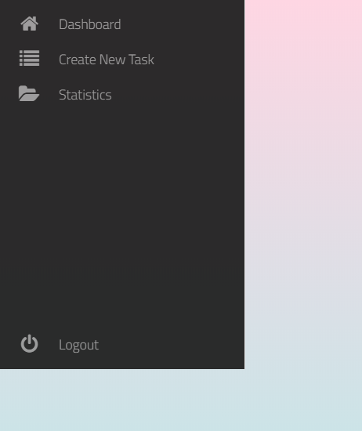
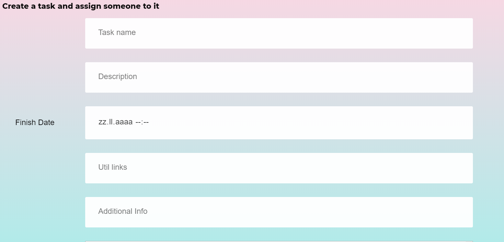
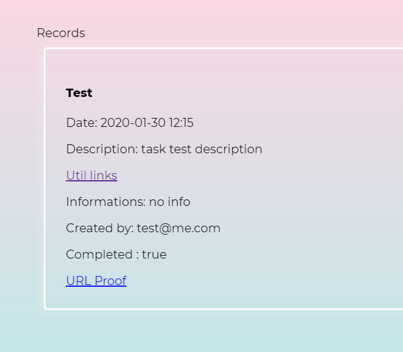

Sistem online de management al programărilor și asignare de taskuri intre useri.
Primul lucru pe care il gasiti cand accesati aplicatia noastra este landing-page-ul. Acolo se gasesc o 2 formulare. 
Daca nu aveti cont pe aplicatie, primul pas este sa va faceti cont.
Desigur, daca aveti deja un cont, atunci puteti accesa pagina de login.
Pasul de register este conceput cat se poate de simplu: un formular in care trebuie sa introduceti o adresa de email valida, o parola si un al treilea camp in care ne asiguram ca nu ati gresit parola.
In cazul in care aveti deja cont, trebuie doar sa apasati butonul de login si veti gasi tot un formular in care trebuie sa introduceti adresa de email si parola.
Si in cazul register-ului si al login-ului, in urma completarii corecte a formularelor veti ajunge pe pagina de home a aplicatiei.
Aici va puteti gestiona taskurile la care ati fost asignat.
In partea din stanga a paginii veti gasi o bara de butoane care conduc catre diferite pagini ale aplicatiei.
Pe pagina de New-Task veti gasi un formular, care contine detalii despre un task. La submit, detaliile task-ului vor fi trimise user-ului asignat de dumneavoastra, iar acesta va primi o notificare mail despre asignarea taskului.
Pe pagina de statistici sunt postate taskurile create de dumneavoastra. Se gasesc acele taskuri completate si acele taskuri respinse.
